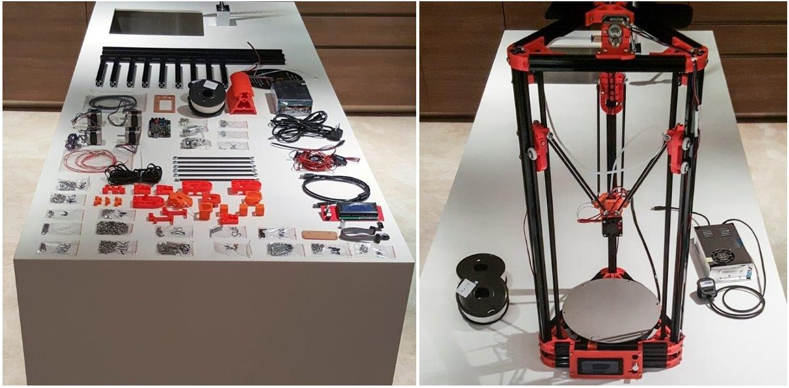

Putting an end to months of wondering how 3D printers work — by building one from a FLSUN Kossel Delta kit.
Published14 March 2017
ByAlex Lim & Mark Bala
Field3D printing

Kit parts laid out (left) and the assembled delta printer (right).
Assembly took us eight hours across two evenings — largely thanks to our innate inability to follow instructions.
Understanding the printer
A triangular prism of aluminium bars, held together by plastic joints, forms the frame — and everything except those bars can be fabricated on the printer itself.
Three carbon-fibre rods connect the extruder to tension belts along the frame; each belt is driven by a stepper motor hidden in the base.
Differential movement of the motors sets the position, speed and direction of the extruder head, with a MEGA 2560 powering it all.
On the software side we used Slic3r and Repetier Host. Slic3r turns 3D models into long lists of x,y coordinates per layer; when a layer's done the head steps up in z and follows the next layer's path.
A fourth stepper controls filament extrusion and retraction — effectively a "print / don't print" switch as all four motors move the head along its path.
Learning points
Every variable matters, and they're often interdependent.
Everything is customisable — print speed, layer thickness, infill density and pattern, temperature, retraction, supports and rafts, cooling, first-layer specifics.
Print orientation matters: as-is, on its side, or upside down.
Solutions to almost every issue are readily available online.
Things we're happy with
It works.
It's properly calibrated — a 2 cm model prints as a 2 cm object.
Printing is cheap — PLA runs about $10/kg on Taobao.
We've printed genuinely useful things: a tap key, Christmas decorations, a bottle opener and a tablet stand.
Ideas for development
Modified and upgraded parts — fans, dampers, tensioners, auto-level — are available online. Some improve print quality; others claim to make the printer run quieter.